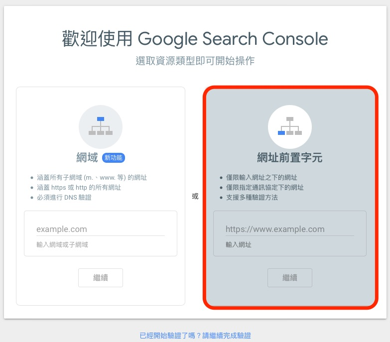
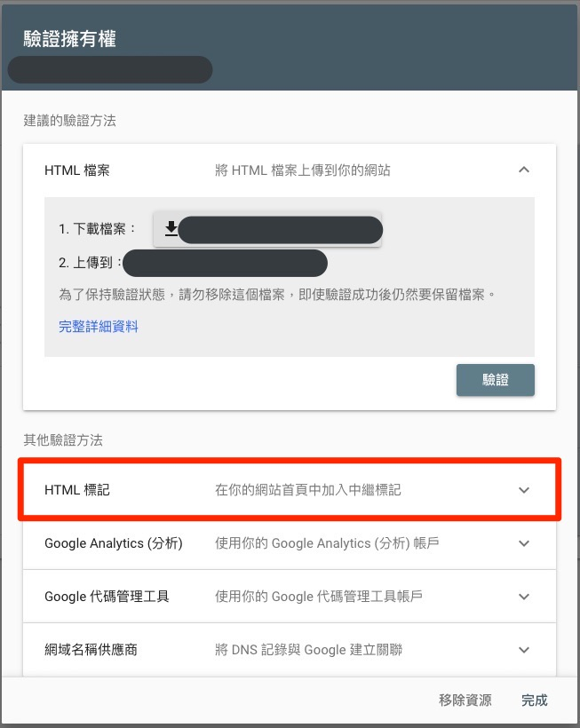
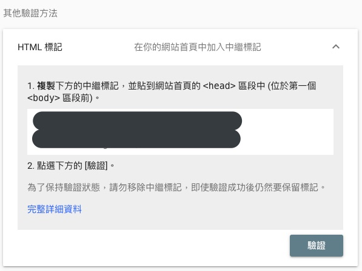
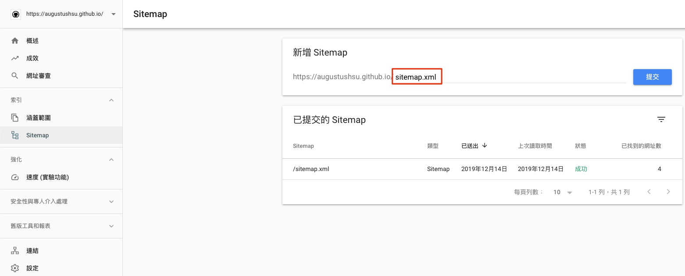
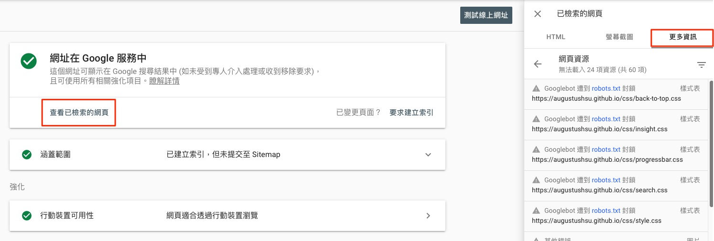

hexo系列-03 讓google可以搜尋到你的網站
前言
原本以為要讓自己的網站在網路上可以被搜尋到，只要能用網址打開網站，之後Google搜尋引擎就可以搜尋到相對應的內容，沒有想到事情不是那麼簡單的我還是太年輕了。
要讓搜尋引擎能搜到自己的網站，首先要去Google網站管理員的Google Search Console提交網站的一些設定，詳細的會在下面一一列出。
安裝sitemap套件
1 | npm install hexo-generator-sitemap --save |
安裝這個套件會直接幫你生成需要的檔案，接著在theme/_config.yml加上下面這段：
1 | #Sitemap |
接下來用：
1 | hexo g |
生成sitemap.xml的檔案，位於XXX.github.io/public/中。
創建robots.txt
在XXX.github.io/source中創建robots.txt文件：
1 | # hexo robots.txt |
robots.txt是用來告訴網路搜尋引擎的漫遊器(又稱網路蜘蛛)，此網站中的哪些內容是不應被搜尋引擎的漫遊器取得的，哪些是可以被漫遊器取得的。
其中Allow後面加的就是你的menu，也就是允許漫遊器搜尋的到網頁，而Disallow則相反。
你可以將在測試的網頁資料夾寫在Disallow上，這樣一些漫遊器就不會去搜到你不想公開的網頁囉，詳細的說明可以參考Googel文件，還有這篇文章。
Google Search Console
前面有說要讓Google搜尋的到你需要在Google Search Console中填寫關於你訊息，登入Google帳戶後，你應該會看到這樣的畫面：

輸入你Github上的網址，之後會要你去驗證：

這邊選擇的是用HTML標記，將google提供的html程式碼複製到XXX.github.io/themes/icarus/layout/common/head.ejs，直接加在最上面就可以：

接著上傳到GitHub：
1 | hexo -g d |
按下驗證，如果設置的正確，就會跳出以下畫面：

接下來要將剛剛建的sitemap.xml提交到Google Search Console：

驗證之後，Google會花一些時間將你的網站建檔，等過了一天你就可以用Google Search Console來分析自己的網頁囉～

robots.txt
點選網址審查把你的網頁貼上，會顯示正在從 Google 索引擷取資料完成後，點選查看以檢索的網頁再點更多資訊就可以看到前面Disallow不想讓其他人看到的部分了：

Google Analytics
打開Google Analytics網站，註冊一個帳號，然後點選追蹤程式碼，複製你的追蹤ID，形式大概是UA-XXXXXXXX-X。
將上面的ID輸入到Icarus下_config.yml檔案中的：
1 | google-analytics: |
最後再將你的成品上傳到Github就完成囉～
1 | hexo -g d |
hexo系列-03 讓google可以搜尋到你的網站